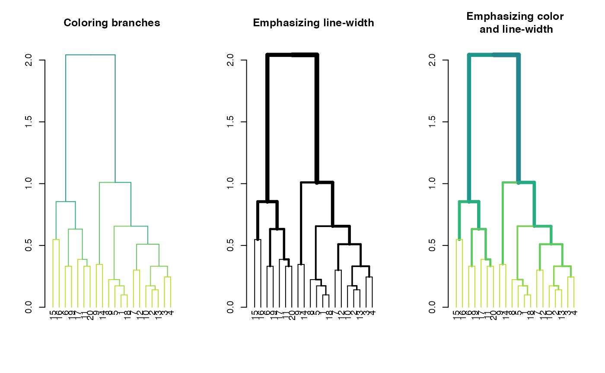
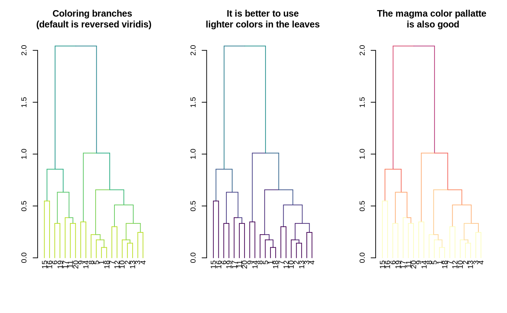
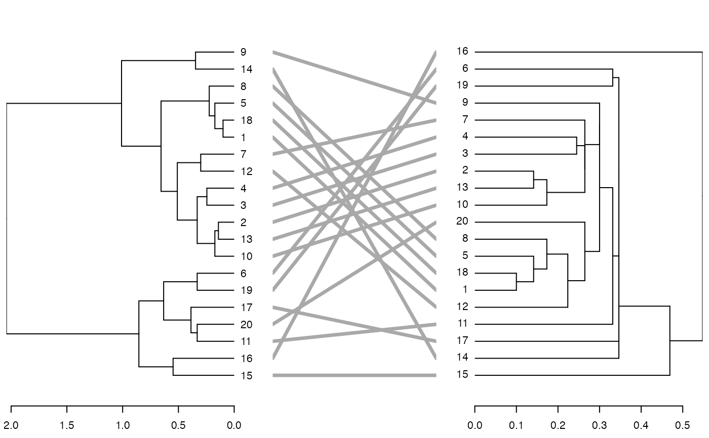
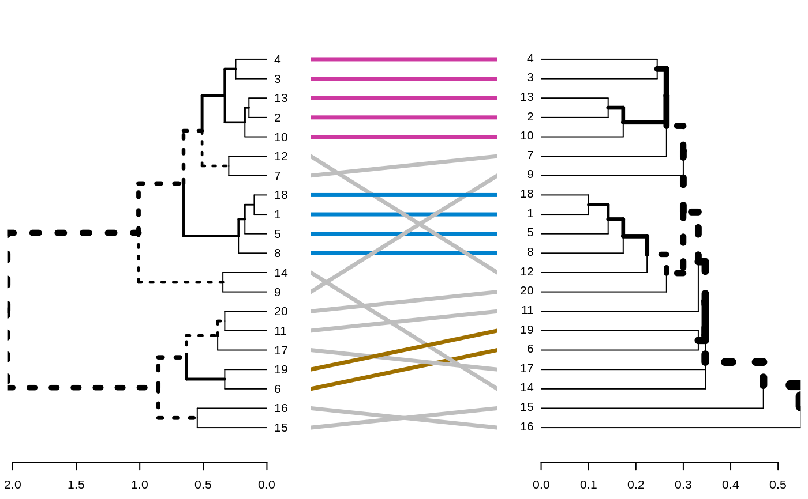
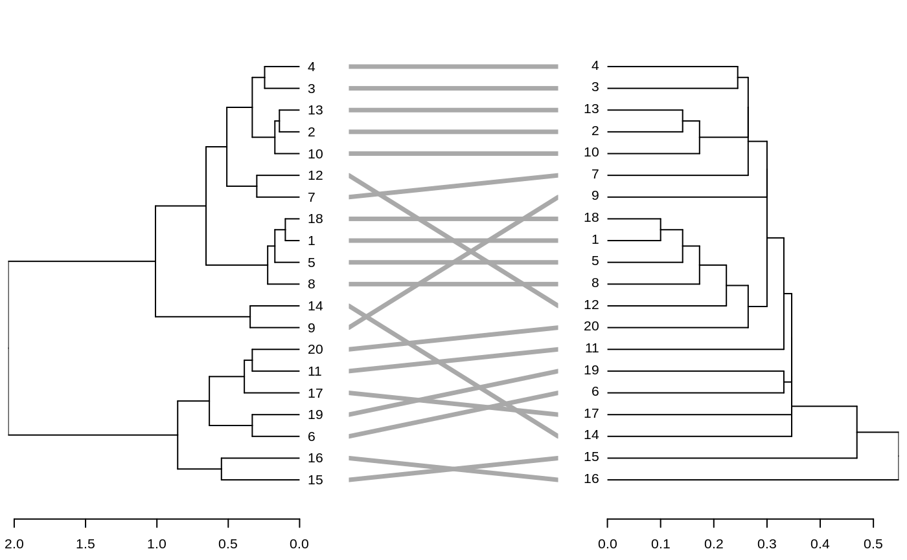
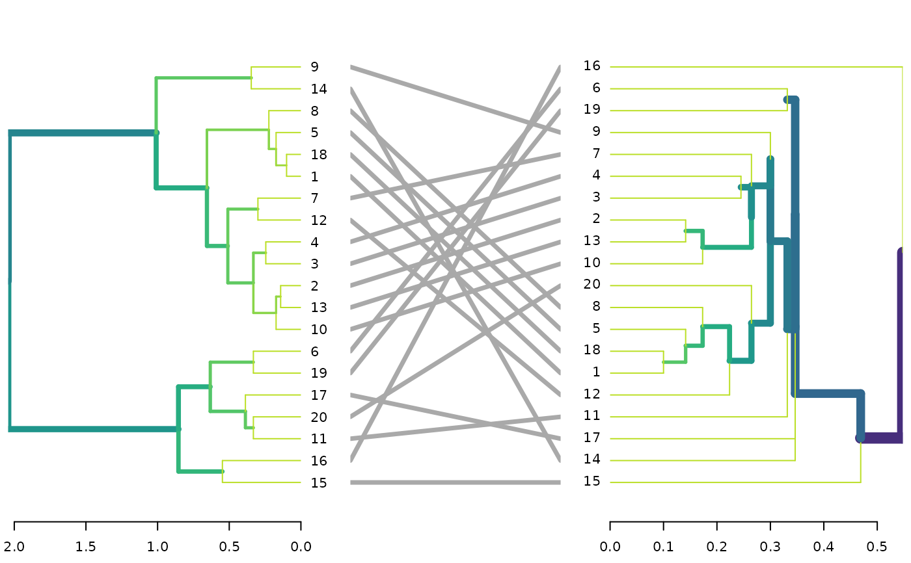
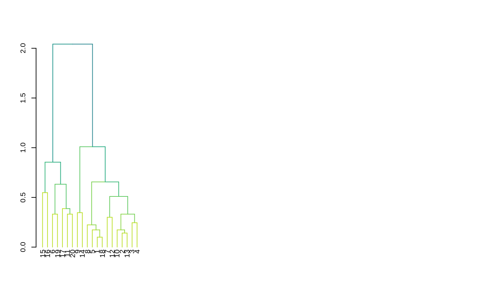

R/highlight_branches.R
highlight_branches.RdHighlights (update) the color (col) and/or line width (lwd) of each branch in a dendrogram based on it's node's height. This is a powerful pre-processing for a tanglegram plot of two dendrograms, as it emphasizes the toplogical structure of each tree (and hence, their similarity and differences).
The colors are based on the viridis pallette, and the line width is on the range of 1 to 10. These can be manually changed when using highlight_branches_col and highlight_branches_lwd respectively.
highlight_branches_col(dend, values = rev(viridis(1000, end = 0.9)), ...) highlight_branches_lwd(dend, values = seq(1, 10, length.out = 1000), ...) highlight_branches(dend, type = c("col", "lwd"), ...)
| dend | a dendrogram tree (to be turned into a ggdend object) |
|---|---|
| values | the gradient of values to be used for each branch. The colors are based on the viridis pallette, and the line width is on the range of 1 to 10. These can be manually changed when using highlight_branches_col and highlight_branches_lwd respectively. |
| ... | Currently ignored. |
| type | a character vector. Either "col", "lwd", or both. Based on whichever is chosen the dendrogram's branches will be updated. |
A modified dendrogram, with colors/line-width in the branches that are proportional to each branche's height (measured by its lower tip).
dat <- iris[1:20,-5] hca <- hclust(dist(dat)) hca2 <- hclust(dist(dat), method = "single") dend <- as.dendrogram(hca) dend2 <- as.dendrogram(hca2) par(mfrow = c(1,3)) dend %>% highlight_branches_col %>% plot(main = "Coloring branches") dend %>% highlight_branches_lwd %>% plot(main = "Emphasizing line-width") dend %>% highlight_branches %>% plot(main = "Emphasizing color\n and line-width")library(viridis)#>par(mfrow = c(1,3)) dend %>% highlight_branches_col %>% plot(main = "Coloring branches \n(default is reversed viridis)") dend %>% highlight_branches_col(viridis(100)) %>% plot(main = "It is better to use\nlighter colors in the leaves") dend %>% highlight_branches_col(rev(magma(1000))) %>% plot(main = "The magma color pallatte\n is also good")dl <- dendlist(dend, dend2) tanglegram(dl, sort = TRUE, common_subtrees_color_lines = FALSE, highlight_distinct_edges = FALSE, highlight_branches_lwd = FALSE)tanglegram(dl)dl <- dendlist(highlight_branches(dend), highlight_branches(dend2)) tanglegram(dl, sort = TRUE, common_subtrees_color_lines = FALSE, highlight_distinct_edges = FALSE)dend %>% set("highlight_branches_col") %>% plot dl <- dendlist(dend, dend2) %>% set("highlight_branches_col") tanglegram(dl, sort = TRUE, common_subtrees_color_lines = FALSE, highlight_distinct_edges = FALSE)# This is also useful for heatmaps # -------------------------- # library(dendextend) x <- as.matrix(datasets::mtcars) Rowv <- x %>% dist %>% hclust %>% as.dendrogram %>% set("branches_k_color", k = 3) %>% set("highlight_branches_lwd") %>% ladderize#> Error in oV(x, wts): argument "wts" is missing, with no default# rotate_DendSer(ser_weight = dist(x)) Colv <- x %>% t %>% dist %>% hclust %>% as.dendrogram %>% set("branches_k_color", k = 2) %>% set("highlight_branches_lwd") %>% ladderize#> Error in oV(x, wts): argument "wts" is missing, with no default#> Error in heatmap.2(x, Rowv = Rowv, Colv = Colv): object 'Rowv' not found